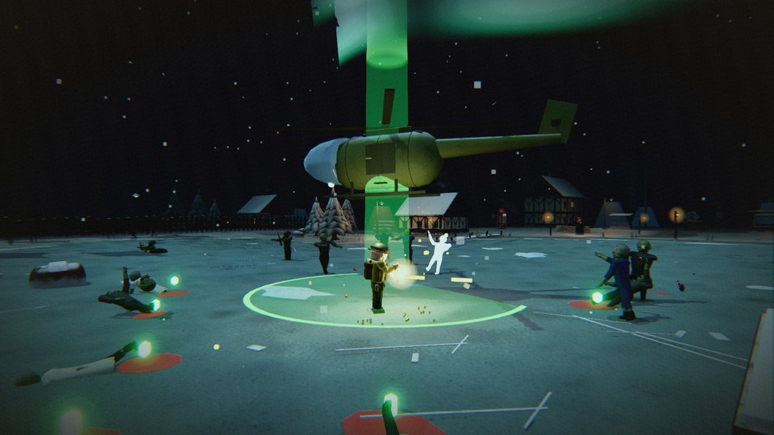
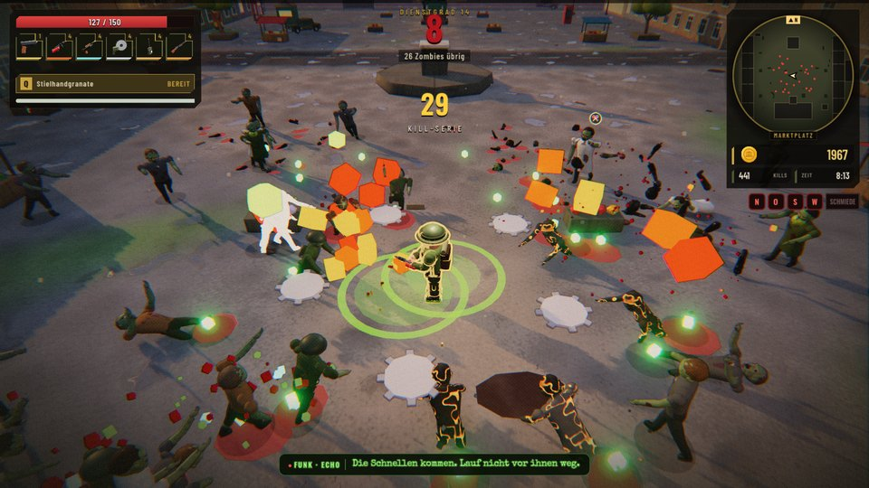
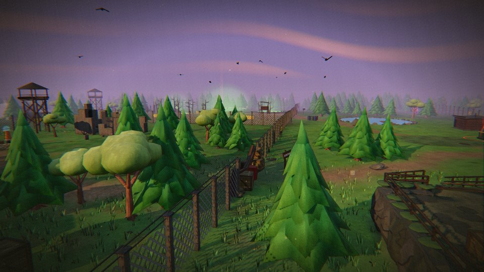

Halte zwanzig Wellen durch. Dann kommt der Helikopter.
Ein Zombie-Survival-Roguelite – kostenlos, solo oder zu zweit.
Angelehnt an Megabonk und den Zombie-Modus aus Call of Duty: Laufen, ausweichen, Beute sammeln, aufrüsten – und die Karte Stück für Stück erobern. Jede Welle bringt mehr Zombies, jede Beförderung macht dich stärker, kein Einsatz läuft gleich.
Vom Feldwebel bis zum Rotium-Huhn – jede mit eigener Waffe, Fähigkeit und eigenem Gang.
Fünf Stufen, Rotium-Schmiede und je eine Weiterentwicklung, die alles ändert.
Waldtal, Eissee, Küstenstadt, Atomwüste – und ganz unten das Finale auf Ebene 9.
Koop über das Internet: gemeinsame Horde, eigener Fortschritt, gegenseitig wiederbeleben.


